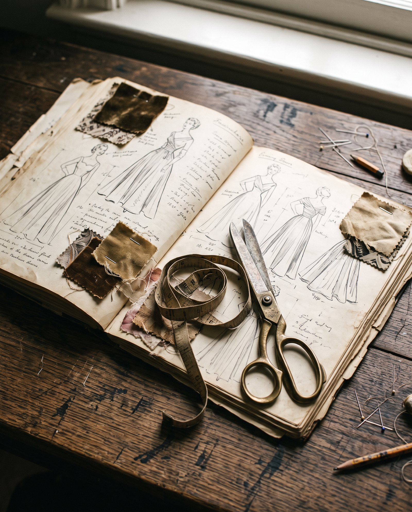

The Maker la créatrice
Alla
Forty years designing and making dresses. One atelier. A lifetime of knowledge, now given to the smallest garments she has ever made.
and atelier work
Alla has spent forty years designing dresses and running an atelier — fitting real women, drafting their patterns and finishing their garments by hand.
That is the knowledge collectors are commissioning: how cloth falls and how a sleeve is set, how a bodice is balanced so that it sits without strain. A doll's dress is not simpler than a woman's. It is the same discipline with less room for error.
- i.
The European tradition
Born in Ukraine and trained in the European school of dressmaking — where a garment is drafted, proven in toile and finished by hand. Precision was never a preference; it was simply how things were done.
- ii.
The dress designer
Four decades of designing dresses for women: sketching silhouettes, choosing cloth, drafting patterns and refining them over fitting after fitting.
- iii.
The atelier
Running her own atelier taught her what clients rarely see — the patience of the toile, the discipline of finishing, and the responsibility of making something a person will keep for life.
- iv.
The miniature
Antique dolls became her most intimate canvas. Every skill from the full-scale atelier is still there — reduced in scale, never in standard.

The dolls are European. So is the craft.
The finest antique dolls came from the bisque workshops of France and Germany, and were dressed after the fashions of Paris and Vienna — the bustles of the 1880s, the high collars of the Belle Époque.
Alla dresses them in that same European language of couture: period silhouettes, natural cloth and finishing done entirely by hand.
The scale becomes smaller. The standard of the work does not.
Three principles
of the atelier.
One pair of hands
Every garment is researched, drafted, cut and finished by Alla herself. Nothing is outsourced, and nothing is made in series.
Honest to the period
Garments are historically sympathetic to the doll's era, and always documented as new work — never presented as original antiques.
Respect for the doll
Each piece is made to dress the doll beautifully and come away cleanly, so her own history stays intact.